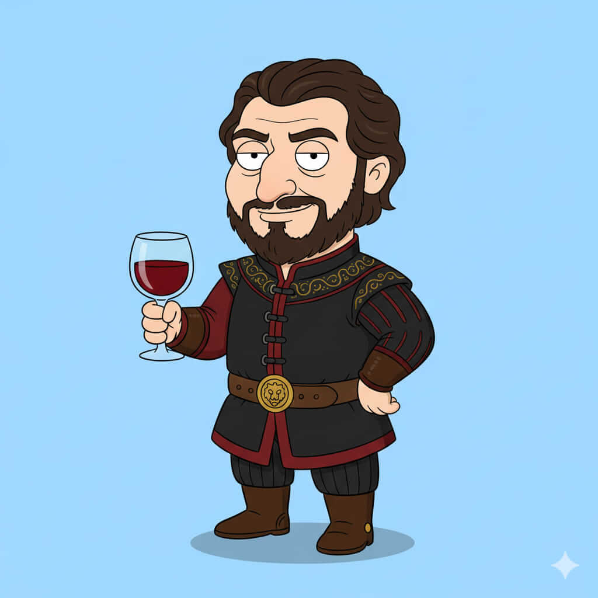

Teryn Lavister
Historia
Teryn Lavister nació en la deslumbrante fortaleza de Lavister, rodeado de oro, sedas y el lujo que caracteriza a su casa. Desde joven comprendió que el poder no se gana solo con la fuerza, sino con la mente, el ingenio y la estrategia. Su educación incluyó tratados de política, historia de Throonia y artes de negociación, lo que lo convirtió en un maestro en mover piezas invisibles en el tablero del poder. Con una ambición que iguala su astucia, Teryn aprendió a cultivar aliados discretos y a manipular a enemigos sin que estos siquiera lo sospecharan.
A lo largo de los años, Teryn se convirtió en el cerebro de Lavister, guiando la casa con decisiones calculadas y planificaciones meticulosas. Sus enemigos lo temen por su habilidad para anticipar movimientos y su capacidad para convertir incluso situaciones desfavorables en ventajas. Sin embargo, Teryn también siente la presión del legado familiar: mantener a Lavister en la cima de Throonia sin perder de vista la moralidad que aún distingue a su linaje de sus rivales. Su vida es un constante equilibrio entre ambición y responsabilidad, donde cada movimiento puede cambiar el destino del reino.
Casa y relaciones
Casa: Lavister.
Familia: Serlise Lavister (hermana), linaje de nobles astutos y poderosos.
Aliados: Casas aliadas mediante pactos estratégicos, comerciantes influyentes y diplomáticos de confianza.
Enemigos: Starfell y Blackmaw, así como otros nobles que compiten por el poder y la riqueza.
Habilidades y personalidad
Ingenio afilado - Estrategia magistral y liderazgo político - Oratoria persuasiva y manipulación sutil.
Personalidad calculadora, ambiciosa y elegante, con un toque de orgullo y sofisticación.